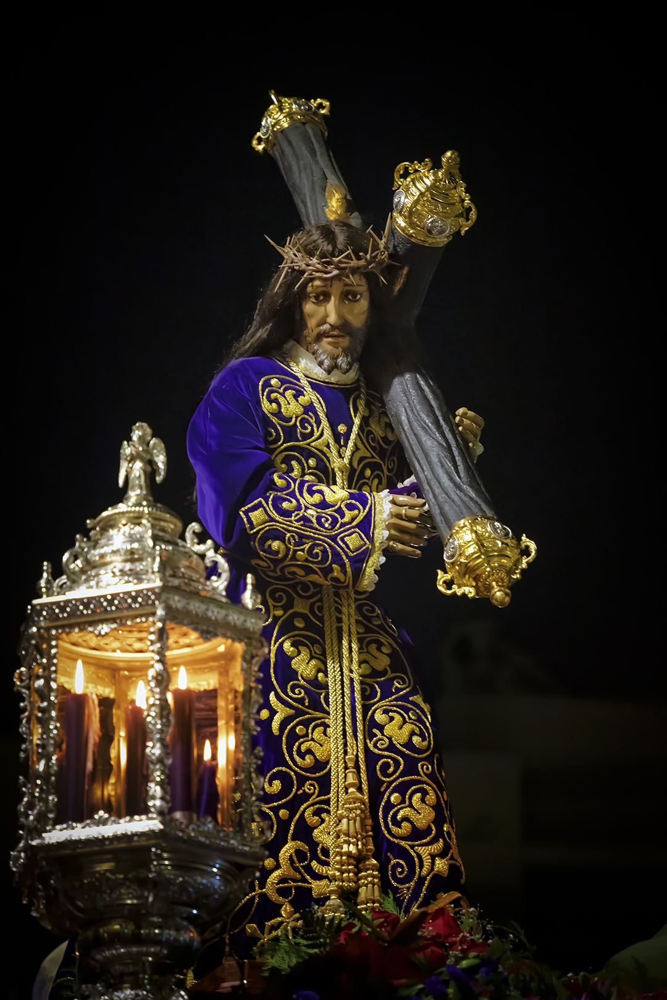

MIÉRCOLES SANTO
Procesión del Encuentro De Nuestro Padre Jesús Nazareno y su Madre de Esperanza en la Calle de la Amargura. Ilustre Archicofradía de Nuestro Padre Jesús Nazareno. Santo Sepulcro y Santa Cruz. Hermandad Juvenil del Santísimo Cristo de la Buena Muerte y Nuestra Señora de la Esperanza.
Con la llegada de Nuestra Esperanza a la hermandad se recuperó la ceremonia del Encuentro de Nuestro Padre Jesús Nazareno con su Madre en la Calle de la Amargura; antiguamente se realizaba con la imagen de Nuestra Señora de los Dolores cuando estas dos imágenes eran prácticamente las únicas que procesionaban en nuestra Semana Santa.
Para la familia de los morados el Encuentro es el culmen de nuestro esfuerzo, el año de desvelos, sacrificio y esfuerzo se culmina en esta Estación de Penitencia. Tristeza y alegría, tristeza por la Cruz sobre el hombro de Nuestro Padre Jesús Nazareno cercano a una terrible muerte y por las lágrimas de sufrimiento infinito de una Madre por ver a su hijo en semejante trance. Alegría porque en esta ceremonia nuestra hermandad funde toda su esencia en las calles de nuestro pueblo. Es el fundamento de nuestras creencias, Nuestro Padre en la fé, Jesús Nazareno, el buque insignia de nuestra archicofradía, y su Madre de Esperanza, la Reina del cielo.
Fe y Esperanza, porque tras su resurrección todo será alegría, ha vencido a la muerte, ha lavado con su sangre nuestros pecados, nos ha enseñado a ser y vivir. 75 años desde que Nuestro Padre Jesús Nazareno volvió a su pueblo. Conmemoramos este hecho con una misa en su honor y salida extraordinaria de la imagen. En el recuerdo todos los pioneros que recibieron entonces aquella imagen, la cuidaron y la veneraron para que llegara hasta nuestros días. Solo somos continuadores de aquellos, nada más y nada menos. Para ellos gracias infinitas por ser los causantes de lo que hoy es nuestra Archicofradía. Nos vemos en Semana Santa
Acompañamiento musical: Paso Nuestro Padre Jesús Nazareno: Agrupación Musical la Estrella de Noalejo". Paso Nuestra Señora de la Esperanza: Asociación Músico-Cultural "Unión Musical Serón".
SALIDA PROCESIONAL: 20:30 h.
PASO DE LA ESPERANZA:
C/ Terrera, c/. Miguel Solves, plaza José Bellver, cf. Manuel de Góngora, c/. Jardines, c/. Rodríguez Carmona, cf. Arcos, cf. Rafael Ortega, c/. Torreta, Avda. San Sebastián, cf. Dr. Gómez Campana, Plaza Jaime Calatrava. Avda. Andalucía, Glorieta de España, Plaza del Pueblo, Avda. Virgen de las Angustias y entrada en la Casa de Hermandad.
PASO DEL NAZARENO:
Glorieta de España, Plaza del Pueblo, Avda. Virgen de las Angustias, c/ Terrera, c/. Miguel Solves, Plaza José Bellver, c/. Manuel de Góngora, cf. Jardines, c/. Rodríguez Carmona, cf. Arcos, cf. Rafael Ortega. c/. Torreta, Avda. San Sebastián, N. Dr. Gómez Campana, Plaza Jaime Calatrava, Avda. Andalucía, Glorieta de España y entrada al Templo.